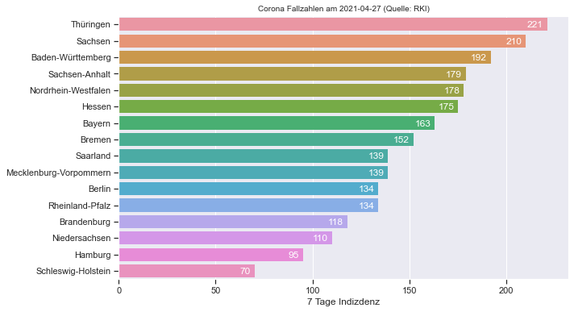
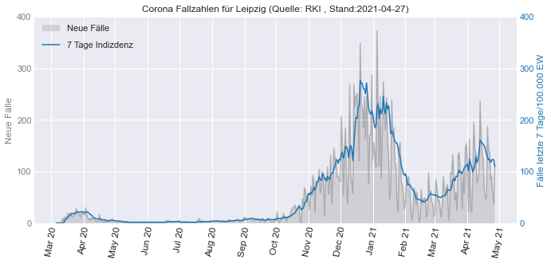

2. Fallstudie RKI Corona Daten¶
2.1. Daten einlesen¶
import pandas as pd
link="https://opendata.arcgis.com/datasets/dd4580c810204019a7b8eb3e0b329dd6_0.csv"
RKI_komplett = pd.read_csv(link)
RKI_komplett.tail()
| ObjectId | IdBundesland | Bundesland | Landkreis | Altersgruppe | Geschlecht | AnzahlFall | AnzahlTodesfall | Meldedatum | IdLandkreis | Datenstand | NeuerFall | NeuerTodesfall | Refdatum | NeuGenesen | AnzahlGenesen | IstErkrankungsbeginn | Altersgruppe2 | |
|---|---|---|---|---|---|---|---|---|---|---|---|---|---|---|---|---|---|---|
| 1786799 | 1786800 | 16 | Thüringen | LK Altenburger Land | A80+ | W | 5 | 0 | 2021/04/21 00:00:00+00 | 16077 | 28.04.2021, 00:00 Uhr | 0 | -9 | 2021/04/21 00:00:00+00 | -9 | 0 | 0 | Nicht übermittelt |
| 1786800 | 1786801 | 16 | Thüringen | LK Altenburger Land | A80+ | W | 2 | 0 | 2021/04/22 00:00:00+00 | 16077 | 28.04.2021, 00:00 Uhr | 0 | -9 | 2021/04/22 00:00:00+00 | -9 | 0 | 0 | Nicht übermittelt |
| 1786801 | 1786802 | 16 | Thüringen | LK Altenburger Land | A80+ | W | 1 | 0 | 2021/04/23 00:00:00+00 | 16077 | 28.04.2021, 00:00 Uhr | 0 | -9 | 2021/04/23 00:00:00+00 | -9 | 0 | 0 | Nicht übermittelt |
| 1786802 | 1786803 | 16 | Thüringen | LK Altenburger Land | A80+ | W | 1 | 0 | 2021/04/26 00:00:00+00 | 16077 | 28.04.2021, 00:00 Uhr | 0 | -9 | 2021/04/26 00:00:00+00 | -9 | 0 | 0 | Nicht übermittelt |
| 1786803 | 1786804 | 16 | Thüringen | LK Altenburger Land | unbekannt | W | 1 | 0 | 2021/04/06 00:00:00+00 | 16077 | 28.04.2021, 00:00 Uhr | 0 | -9 | 2021/04/06 00:00:00+00 | -9 | 0 | 0 | Nicht übermittelt |
2.2. Fälle für Gesamtdeutschland bestimmen¶
RKI_Deutschland = RKI_komplett.groupby(['Meldedatum']).agg({'AnzahlFall': ['sum']}).reset_index()
RKI_Deutschland['Meldedatum'] = pd.to_datetime(RKI_Deutschland['Meldedatum'],format='%Y/%m/%d')
RKI_Deutschland.columns = ['Meldedatum','Neue Fallzahlen']
RKI_Deutschland["Neue Fallzahlen"] = RKI_Deutschland["Neue Fallzahlen"].astype(int)
RKI_Deutschland["Neue Fallzahlen Mittelwert (7 Tage)"] = RKI_Deutschland["Neue Fallzahlen"].rolling(7).mean().fillna(0)
RKI_Deutschland["Neue Fallzahlen Mittelwert (7 Tage)"] = RKI_Deutschland["Neue Fallzahlen Mittelwert (7 Tage)"].astype(int)
RKI_Deutschland["Faelle gesamt"] = RKI_Deutschland["Neue Fallzahlen"].cumsum(axis = 0)
RKI_Deutschland.to_csv("RKI_Corona_Deutschland.csv", index=False)
RKI_Deutschland.tail()
| Meldedatum | Neue Fallzahlen | Neue Fallzahlen Mittelwert (7 Tage) | Faelle gesamt | |
|---|---|---|---|---|
| 441 | 2021-04-23 00:00:00+00:00 | 22873 | 20670 | 3276582 |
| 442 | 2021-04-24 00:00:00+00:00 | 17820 | 20687 | 3294402 |
| 443 | 2021-04-25 00:00:00+00:00 | 8597 | 20652 | 3302999 |
| 444 | 2021-04-26 00:00:00+00:00 | 11309 | 20505 | 3314308 |
| 445 | 2021-04-27 00:00:00+00:00 | 17841 | 19051 | 3332149 |
2.3. Bundesland rausfiltern¶
RKI_Bundesland = RKI_komplett.groupby(['Meldedatum','Bundesland']).agg({'AnzahlFall': ['sum']}).reset_index()
RKI_Bundesland.columns=["Meldedatum","Bundesland","Neue Fallzahlen"]
RKI_Bundesland['Meldedatum'] = pd.to_datetime(RKI_Bundesland['Meldedatum'],format='%Y/%m/%d')
RKI_Bundesland.to_csv("RKI_Corona_Bundeslaender.csv", index=False)
RKI_Bundesland
| Meldedatum | Bundesland | Neue Fallzahlen | |
|---|---|---|---|
| 0 | 2020-01-07 00:00:00+00:00 | Nordrhein-Westfalen | 1 |
| 1 | 2020-01-19 00:00:00+00:00 | Berlin | 1 |
| 2 | 2020-01-23 00:00:00+00:00 | Saarland | 1 |
| 3 | 2020-01-25 00:00:00+00:00 | Nordrhein-Westfalen | 1 |
| 4 | 2020-01-28 00:00:00+00:00 | Bayern | 2 |
| ... | ... | ... | ... |
| 6634 | 2021-04-27 00:00:00+00:00 | Saarland | 189 |
| 6635 | 2021-04-27 00:00:00+00:00 | Sachsen | 1022 |
| 6636 | 2021-04-27 00:00:00+00:00 | Sachsen-Anhalt | 479 |
| 6637 | 2021-04-27 00:00:00+00:00 | Schleswig-Holstein | 352 |
| 6638 | 2021-04-27 00:00:00+00:00 | Thüringen | 814 |
6639 rows × 3 columns
7 Tage Inizidenz¶
Bundeslaender = RKI_Bundesland["Bundesland"].unique()
li = []
for i in Bundeslaender:
df = RKI_Bundesland.loc[RKI_Bundesland["Bundesland"] == i]
df["Neue Fallzahlen Mittelwert (7 Tage)"] = df["Neue Fallzahlen"].rolling(7).mean().fillna(0)
df["Neue Fallzahlen Summe (7 Tage)"] = df["Neue Fallzahlen"].rolling(7).sum().fillna(0)
df["Neue Fallzahlen Mittelwert (7 Tage)"] = df["Neue Fallzahlen Mittelwert (7 Tage)"].astype(int)
df["Neue Fallzahlen Summe (7 Tage)"] = df["Neue Fallzahlen Summe (7 Tage)"].astype(int)
df["Faelle gesamt"] = df["Neue Fallzahlen"].cumsum(axis = 0)
if i == "Brandenburg":
Einwohner=2521893
if i == "Nordrhein-Westfalen":
Einwohner=17947221
if i == "Baden-Württemberg":
Einwohner=11100394
if i == "Saarland":
Einwohner=986887
if i == "Sachsen":
Einwohner=4071971
if i == "Bayern":
Einwohner=13124737
if i == "Niedersachsen":
Einwohner=7993608
if i == "Hessen":
Einwohner=6288080
if i == "Rheinland-Pfalz":
Einwohner=4093903
if i == "Schleswig-Holstein":
Einwohner=2903773
if i == "Hamburg":
Einwohner=1847253
if i == "Bremen":
Einwohner=681202
if i == "Berlin":
Einwohner=3669491
if i == "Mecklenburg-Vorpommern":
Einwohner=1608138
if i == "Thüringen":
Einwohner=2133378
if i == "Sachsen-Anhalt":
Einwohner=2194782
df["7 Tage Indizdenz"] = df["Neue Fallzahlen Summe (7 Tage)"]/Einwohner*100000
df["7 Tage Indizdenz"] = df["7 Tage Indizdenz"].round(0)
li.append(df)
# Dataframe zusammenführen
Bundeslaender_RM7 = pd.concat(li, axis=0, ignore_index=True)
Bundeslaender_RM7
Daten aus dem letzten Tag¶
Bundeslaender_RM7_lastday=Bundeslaender_RM7.loc[Bundeslaender_RM7["Meldedatum"]==Bundeslaender_RM7["Meldedatum"].iloc[-1]].sort_values(by="7 Tage Indizdenz", ascending=False).reset_index(drop=True)
Bundeslaender_RM7_lastday
Plot mit seaborn¶
import seaborn as sns
import matplotlib.pyplot as plt
import numpy as np
sns.set_context("notebook")
def show_values_on_bars(axs, h_v="v", space=0.4, space2=0):
def _show_on_single_plot(ax):
if h_v == "v":
for p in ax.patches:
_x = p.get_x() + p.get_width() / 2
_y = p.get_y() + p.get_height()
value = int(p.get_height())
ax.text(_x, _y, value, ha="center")
elif h_v == "h":
for p in ax.patches:
_x = p.get_x() + p.get_width() + float(space)
_y = p.get_y() + p.get_height() / 2 + float(space2)
value = int(p.get_width())
ax.text(_x, _y, value, ha="right", va="center", c="white")
if isinstance(axs, np.ndarray):
for idx, ax in np.ndenumerate(axs):
_show_on_single_plot(ax)
else:
_show_on_single_plot(axs)
fig , ax = plt.subplots(figsize=(10,6))
ax = sns.barplot(data=Bundeslaender_RM7_lastday,y="Bundesland", x="7 Tage Indizdenz")
show_values_on_bars(ax, "h", -2,0.05) # Zahlen hinzufügen
# title
last_date = Bundeslaender_RM7_lastday.iloc[-1,0].strftime('%Y-%m-%d') # letztes Datum als Datenstand
ax.set_title("Corona Fallzahlen am "+last_date+" (Quelle: RKI)", fontsize=10)
# Label
ax.set_ylabel("")
plt.savefig('Bundeslaender_RKI-Coronazahlen_Stand'+last_date+'.png', bbox_inches='tight', dpi=150)
plt.show()

2.4. Leipzig rausfiltern¶
Leipzig = RKI_komplett.loc[RKI_komplett["Landkreis"] == "SK Leipzig"]
Leipzig = Leipzig.groupby(['Meldedatum']).agg({'AnzahlFall': ['sum']}).reset_index()
Leipzig['Meldedatum'] = pd.to_datetime(Leipzig['Meldedatum'],format='%Y/%m/%d')
Leipzig.columns = ['Meldedatum','Neue Fallzahlen']
Leipzig["Neue Fallzahlen Mittelwert (7 Tage)"] = Leipzig["Neue Fallzahlen"].rolling(7).mean().fillna(0).astype(int)
Leipzig["Neue Fallzahlen Summe (7 Tage)"] = Leipzig["Neue Fallzahlen"].rolling(7).sum().fillna(0).astype(int)
Leipzig["Faelle gesamt"] = Leipzig["Neue Fallzahlen"].cumsum(axis = 0)
Einwohner = 605407 # Quelle: https://www.leipzig.de/news/news/leipzig-hat-jetzt-605407-einwohner/
Leipzig["7 Tage Indizdenz"] = Leipzig["Neue Fallzahlen Summe (7 Tage)"]/Einwohner*100000
Leipzig["7 Tage Indizdenz"] = Leipzig["7 Tage Indizdenz"].round(0)
Leipzig.to_csv("RKI_Corona_Leipzig.csv", index=False)
Leipzig
| Meldedatum | Neue Fallzahlen | Neue Fallzahlen Mittelwert (7 Tage) | Neue Fallzahlen Summe (7 Tage) | Faelle gesamt | 7 Tage Indizdenz | |
|---|---|---|---|---|---|---|
| 0 | 2020-03-06 00:00:00+00:00 | 1 | 0 | 0 | 1 | 0.0 |
| 1 | 2020-03-08 00:00:00+00:00 | 1 | 0 | 0 | 2 | 0.0 |
| 2 | 2020-03-10 00:00:00+00:00 | 2 | 0 | 0 | 4 | 0.0 |
| 3 | 2020-03-11 00:00:00+00:00 | 2 | 0 | 0 | 6 | 0.0 |
| 4 | 2020-03-12 00:00:00+00:00 | 10 | 0 | 0 | 16 | 0.0 |
| ... | ... | ... | ... | ... | ... | ... |
| 338 | 2021-04-23 00:00:00+00:00 | 86 | 102 | 714 | 19974 | 118.0 |
| 339 | 2021-04-24 00:00:00+00:00 | 91 | 105 | 741 | 20065 | 122.0 |
| 340 | 2021-04-25 00:00:00+00:00 | 57 | 107 | 751 | 20122 | 124.0 |
| 341 | 2021-04-26 00:00:00+00:00 | 38 | 105 | 740 | 20160 | 122.0 |
| 342 | 2021-04-27 00:00:00+00:00 | 113 | 95 | 665 | 20273 | 110.0 |
343 rows × 6 columns
plot mit matplotlib¶
import matplotlib.pyplot as plt
import matplotlib.dates as dates
import matplotlib.ticker as tkr
# Allgemein
plt.style.use('seaborn-darkgrid') # default stil einstellen (auch andere stile z.B. auch "seaborn-darkgrid" möglich )
plt.rcParams.update({'font.size': 20});
# Set Figure
fig , ax1 = plt.subplots(figsize=(10,5))
# Plot 1 : ax1 - neue Fälle
# Plot
ax1.plot(Leipzig["Meldedatum"],Leipzig["Neue Fallzahlen"], color='tab:gray', alpha=0.5)
ax1.fill_between(Leipzig["Meldedatum"], Leipzig["Neue Fallzahlen"], 0, facecolor ='tab:gray', alpha=0.25, zorder=-99, label="Neue Fälle")
# Plot 2 : ax2 - Fälle kumuliert
ax2 = ax1.twinx()
# Plot
ax2.plot(Leipzig["Meldedatum"],Leipzig["7 Tage Indizdenz"], color='tab:blue',label="7 Tage Indizdenz", zorder=99)
ax2.grid()
# Legenden
ax1.legend(bbox_to_anchor=(0, 1.0), loc='upper left')
ax2.legend(bbox_to_anchor=(0, 0.92), loc='upper left')
# Zahlen der y-Achse Tausend mit Komma trennen
ax1.get_yaxis().set_major_formatter(tkr.FuncFormatter(lambda x, p: format(int(x), ",")))
ax2.get_yaxis().set_major_formatter(tkr.FuncFormatter(lambda x, p: format(int(x), ",")))
# Farben der zwei y-Achsen anpassen (mit Beschriftung)
ax1.set_ylabel('Neue Fälle', color='tab:gray')
ax2.set_ylabel("Fälle letzte 7 Tage/100.000 EW", color='tab:blue')
ax1.tick_params(colors='tab:gray', which='both', axis="y")
ax2.tick_params(colors='tab:blue', which='both', axis="y")
# y ticks Anpassen
ax1.set_ylim(bottom=0, top=400) # Achse 2 Limits
ax2.set_ylim(bottom=0, top=400) # Achse 1 Limits
nticks=5 # Anzahl Ticks für Achse 1 und 2
ax1.yaxis.set_major_locator(tkr.LinearLocator(nticks))
ax2.yaxis.set_major_locator(tkr.LinearLocator(nticks))
# x ticks Anpassen
ax1.xaxis.set_major_locator(dates.MonthLocator(interval=1)) # jeden Monat ein Tick
ax1.xaxis.set_major_formatter(dates.DateFormatter('%b %y')) # Darstellung Monatsnamekurz + Jahr
# x Tick Schrift Formatierung (Variante 1: eigene Einstellungen)
labels = ax1.get_xticklabels(); # labels auslesen um diese noch mal zu formatieren
plt.setp(labels, rotation=80, fontsize=12); # Labels drehen
# x Tick Schrift Formatierung (Variante 2: automatisch)
#fig.autofmt_xdate()
# title
last_date = Leipzig.iloc[-1,0].strftime('%Y-%m-%d') # letztes Datum als Datenstand
ax1.set_title("Corona Fallzahlen für Leipzig (Quelle: RKI , Stand:"+last_date+")", fontsize=12)
plt.tight_layout()
plt.savefig('Leipzig_RKI-Coronazahlen_Stand'+last_date+'.png', bbox_inches='tight', dpi=150)
plt.show()
